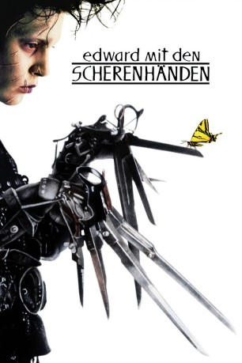

#2260 Edward mit den Scherenhänden
Alternativ: Edward Scissorhands
Auszeichnungen: für 1 Oscars nominiert 1 BAFTA-Awards gewonnen
 
 IMDB-Wertung: 7.9 / 10
IMDB-Wertung: 7.9 / 10  Metascore: 74
Metascore: 74 
Ein Erfinder hat den großen Traum, einen künstlichen Menschen zu erschaffen. Doch bevor er Edward vollenden kann, stirbt er an einem Herzinfarkt. Von da an lebt Edward alleine in dessen Schloss weiter und hat dort Scheren wo eigentlich seine Hände sein sollten. Eines Tages macht sein Leben eine Wendung, als die Avon-Vertreterin Peg das Schloss betritt. Peg nimmt den Jungen mit den Scherenhänden bei sich auf. Schnell macht er sich bei der Nachbarschaft beliebt, indem er ihre Büsche in den unterschiedlichsten Formen trimmt und später sogar die Haare der Frauen des Vorortes frisiert. Als er sich allerdings in Pegs Tochter Kim verliebt und deren Freund Edward für seine Zwecke missbraucht, droht diese anfängliche Begeisterung langsam zu schwinden.
Jahr: 1990
Dauer: 105 Minuten
FSK: 6
Land: USA Studio: 20th Century FoxTonspuren:
Untertitel:
Auflösung: 1080p (1920x1040) Größe: 8949 MB
Genre: Drama, Fantasy, Liebe
Regisseur:  Tim Burton
Tim Burton
Drehbuch: Tim Burton, Caroline Thompson, Caroline Thompson
Soundtrack: Danny Elfman
Darsteller:
 Johnny Depp als Edward Scissorhands
Johnny Depp als Edward Scissorhands Winona Ryder als Kim
Winona Ryder als Kim Dianne Wiest als Peg
Dianne Wiest als Peg Anthony Michael Hall als Jim
Anthony Michael Hall als Jim Kathy Baker als Joyce
Kathy Baker als Joyce Conchata Ferrell als Helen
Conchata Ferrell als Helen Caroline Aaron als Marge
Caroline Aaron als Marge Dick Anthony Williams als Officer Allen
Dick Anthony Williams als Officer Allen O-Lan Jones als Esmeralda
O-Lan Jones als Esmeralda Vincent Price als The Inventor
Vincent Price als The Inventor Alan Arkin als Bill
Alan Arkin als Bill Susan Blommaert als Tinka
Susan Blommaert als Tinka- John Davidson als Host-TV
 Biff Yeager als George
Biff Yeager als George Aaron Lustig als Psychologist
Aaron Lustig als Psychologist Alan Fudge als Loan Officer
Alan Fudge als Loan Officer Steven Brill als Dishwasher Man
Steven Brill als Dishwasher Man Marc Macaulay als Reporter
Marc Macaulay als Reporter Brett Rice als Reporter
Brett Rice als Reporter- Donna Pieroni als Blonde / TV
- Michael Gaughan als Policeman
- Kathy Lockwood als Neighborhood Extra
- Mary Jane Heath als Neighborhood Extra
- James Spicer als Neighborhood Extra
- Nick Carter als Neighborhood Extra , uncredited
- Tim Rerucha als Van Friend , uncredited
- Robert Oliveri als Kevin
- Linda Perri als Cissy
- Marti Greenberg als Suzanne
 Bryan Larkin als Max
Bryan Larkin als Max- John McMahon als Denny
- Victoria Price als TV Newswoman
- Stuart Lancaster als Retired Man
- Gina Gallagher als Granddaughter
- Peter Palmer als Editor
- Carmen J. Alexander als Reporter
- Andrew B. Clark als Beefy Man
- Kelli Crofton als Pink Girl
- Linda Jean Hess als Older Woman / TV
- Rosalyn Thomson als Young Woman / TV
- Lee Ralls als Red-Haired Woman / TV
- Eileen Meurer als Teenage Girl / TV
- Bea Albano als Rich Widow / TV
- Ken DeVaul als Policeman
- Tricia Lloyd als Teenage Girl
- Kathy Dombo als Other Teen
- Rex Fox als Police Sergeant
- Sherry Ferguson als Max's Mother
- Tabetha Thomas als Little Girl on Bike
- Tammy Boalo als Neighborhood Extra
Datei: X:\1990\Edward mit den Scherenhänden (1990, FSK6, 1920x1040).mkv seit 25.10.2015
Festplatte: HD 1987-1991
 Es gibt insgesamt 52 Filme in der Gruppe '1990'
Es gibt insgesamt 52 Filme in der Gruppe '1990'